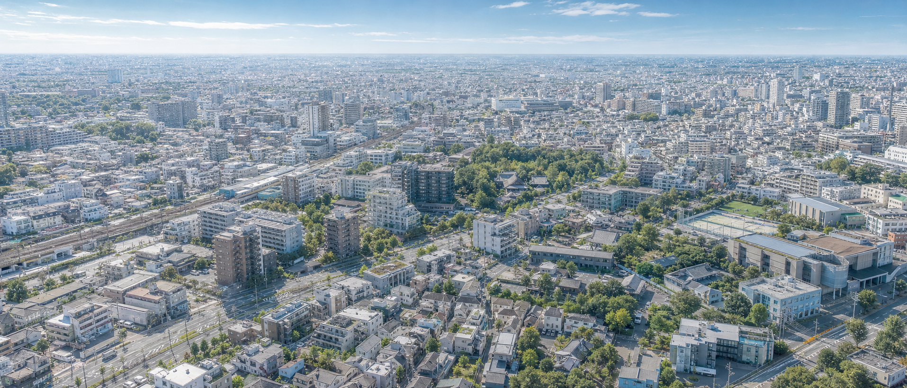
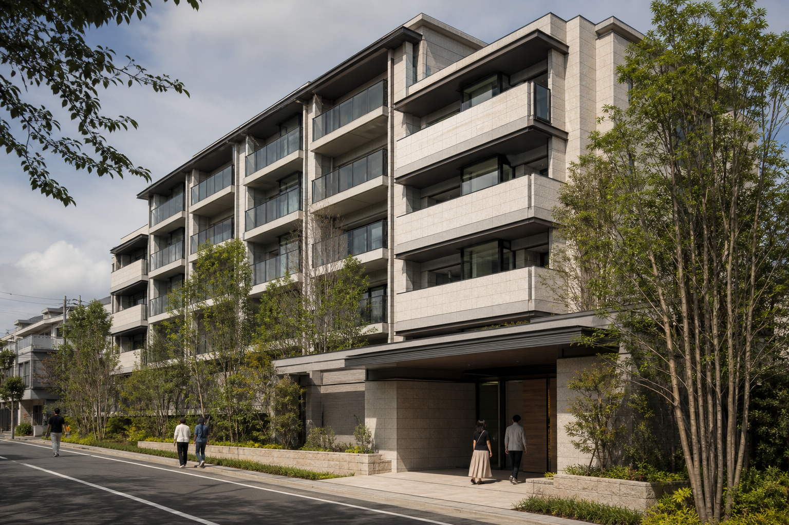
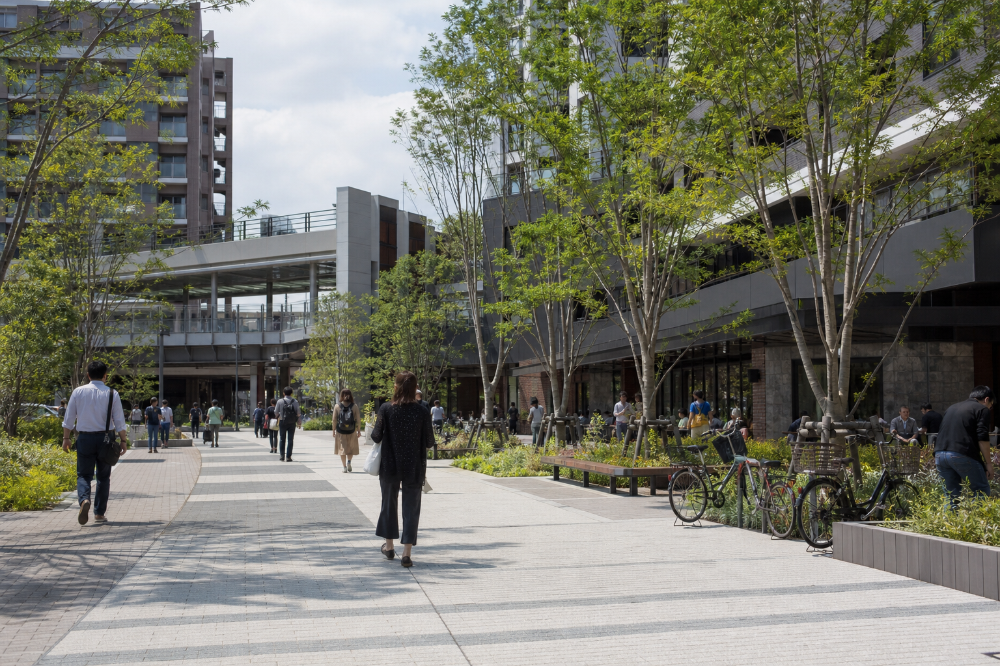
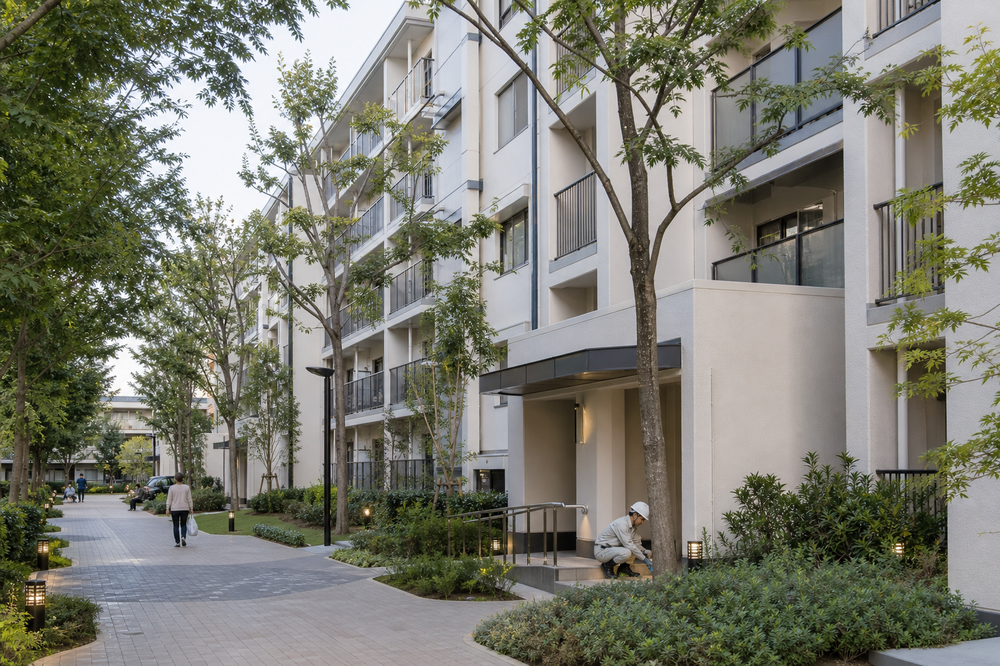
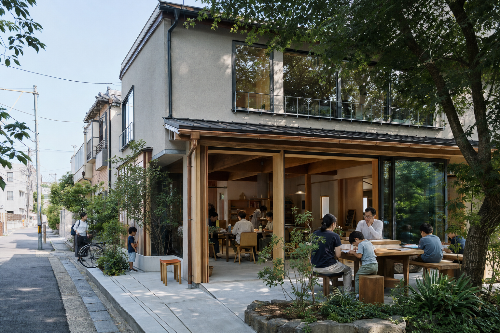

BUSINESS
事業紹介


住宅開発事業
土地の可能性を読み解き、新しい暮らしの価値をかたちにします。
用地取得から商品企画、設計・施工、販売、引渡しまで、集合住宅開発を一貫して手がけています。
周辺環境や街並み、緑、光や風など、その土地が持つ特性を読み解き、建物配置や共用空間、住戸計画に反映。長く快適に暮らせる住まいづくりを進めています。

市街地整備事業
地域の価値を受け継ぎ、次の時代の街へつなぎます。
老朽化した住宅地や既成市街地を対象に、権利調整から施設計画、工事、完成後の管理まで一体的に推進します。
行政や権利者、地域住民など多様な関係者と連携し、既存の緑や街路、人の動きなどを生かしながら、地域の将来を見据えた街区形成に取り組みます。

建物再生・ストック活用事業
今ある建物を生かし、次の暮らしにふさわしい姿へ再生します。
集合住宅を中心に、設備更新、省エネルギー化、共用空間や外構の再整備などを通じて、既存建物の価値向上に取り組みます。
建物の状態や利用実態を踏まえ、居住を継続しながら段階的に改修。建物性能だけでなく、暮らしやすさや将来の維持管理まで見据えて再生します。

まちづくり・エリアマネジメント事業
開発後も地域に関わり、街の価値を育てます。
自治体や地域団体、学校、商店などと連携し、防災、緑地管理、公共空間の活用、地域交流などに取り組みます。
地域ごとの特性や課題に応じて、地域の担い手とともに継続的な運営の仕組みをつくります。